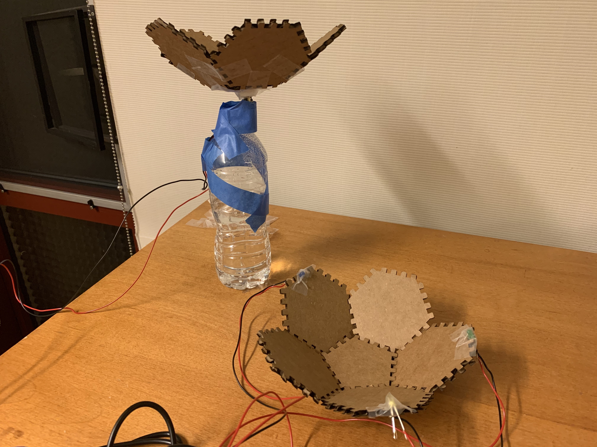
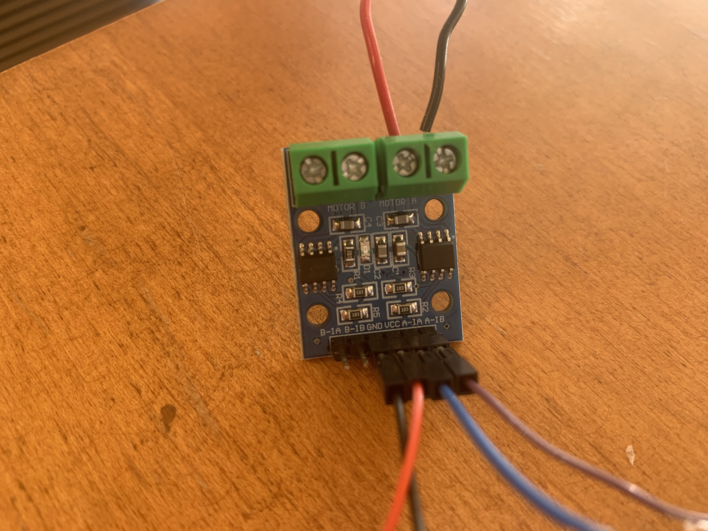
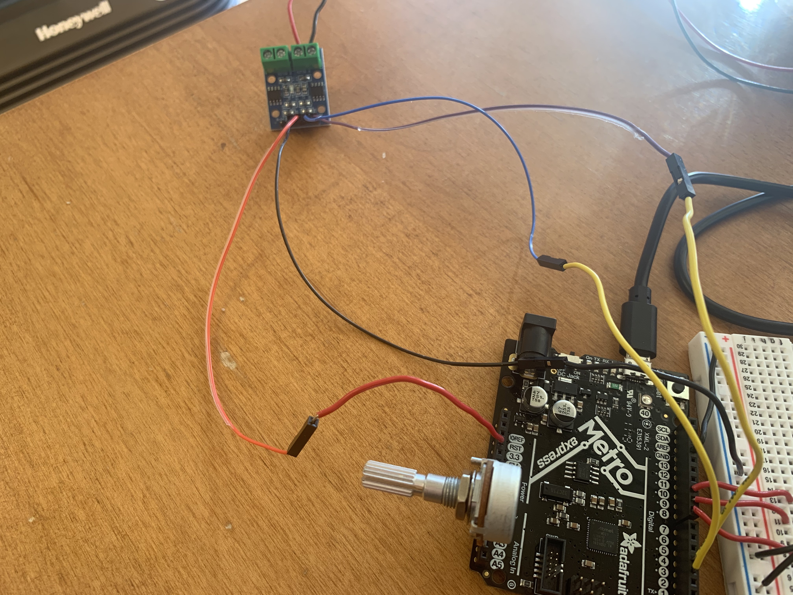
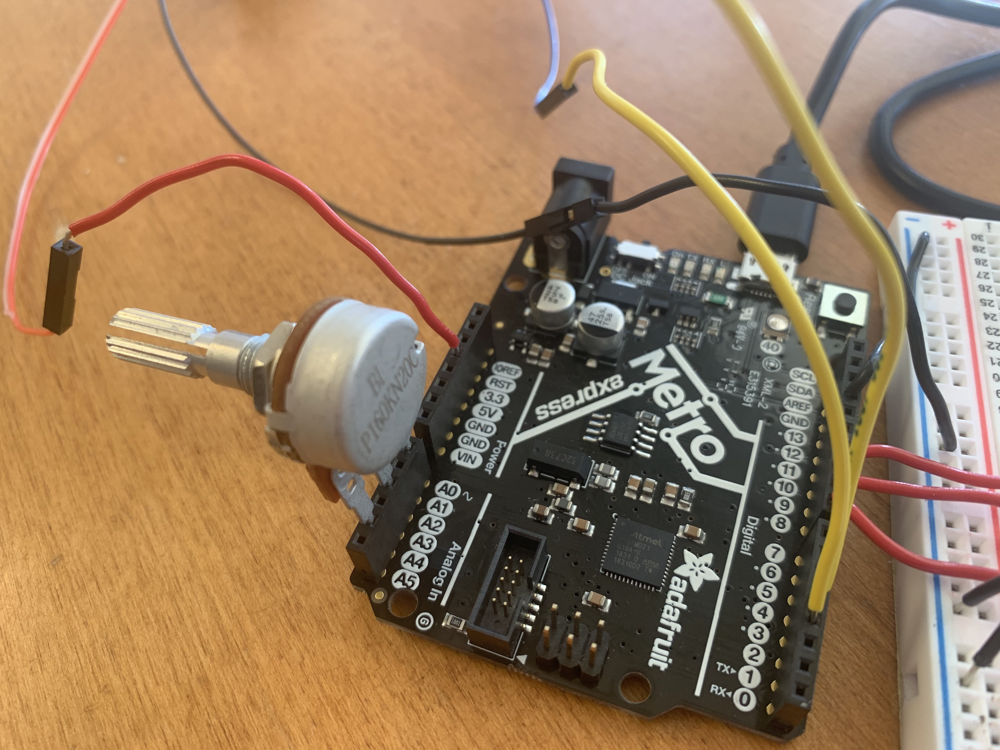
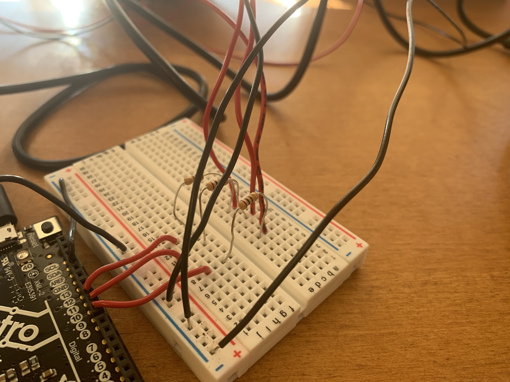

This week, I modified my project from last week slightly so that I would be able to write programs using the Arduino IDE and run them on my Adafruit Metro M0 Express Microcontroller.
Feel free to check out last week’s assignment to learn more about my “Flower Garden” sculpture, but here’s a picture of the sculpture I created. (This is mostly the same as last week except I had to apply a little more Scotch tape and decided to tape the cardboard piece upwards since it kept bumping the water bottle while spinning).
I updated my circuit slightly to use the Metro analog and digital pins rather than only the power supply. For this project, I decided that I wanted to do two things: control motor speed and direction using a microcontroller and potentiometer and create a light show.
This class link was a very helpful resource in helping me figure out how to use the Metro M0 Express microcontroller, a potentiometer, a DC motor, and a L9110 motor driver to control the speed and direction of the motor using Arduino code.
First, I attached the motor to the L9110 motor driver by screwing my motor leads into the screw terminals using the port for Motor A.
Then I connected GND to the negative terminal on the breadboard and 3.3V from the Metro to the L9110 (GND and VCC) by combining a pin-pin wire and a socket-socket wire to make a pin-socket wire and making these connections directly to the Metro.
I connected the negative terminal on the breadboard to GND using the GND pin on the Digital side of the Metro. Afterwards, I connected the A-1A and A-1B pins of the L9110 to pins 3 and 4 of the Metro.
In order to use the potentiometer, I placed it across pins A0, A2, and A4 of the Metro.
For the LEDs, I connected the lights to pins 8, 9, and 10 by connecting the negative side of the LEDs to GND and the positive side of the LEDs to a 100 ohm resistor that connected to a wire connecting to the three pins on the Metro board.
Now my circuit is ready to run using some Arduino code!
/* Code to run motor in one direction based on potentiometer reading.
* Motor driver control on pin 3/
* Potentiometer plugged into A0, A2, and A4 on Metro M0 ( or similar).
*/
void setup() {
pinMode(3, OUTPUT); // define pin 3 for A-1A (PWM Speed)
pinMode(4, OUTPUT); // define pin 4 for A-1B (direction)
pinMode(8, OUTPUT); // define pin 8 as LED pin
pinMode(9, OUTPUT); // define pin 9 as LED pin
pinMode(10, OUTPUT); // define pin 10 as LED pin
pinMode(A0, OUTPUT); //This will be GND for the potentiometer
pinMode(A4, OUTPUT); //This will be 3.3V for the pot.
digitalWrite(A0, LOW);
digitalWrite(A4, HIGH);
}
void loop() {
int pot_value = analogRead(A2); // pot wiper is on A2
Serial.println(pot_value);
int motor_level = map(pot_value, 0, 1023, 255, 0); // map motor_level to pot_value so that zero corresponds to lowest speed.
// start the motor
analogWrite(3, motor_level);
digitalWrite(4, LOW);
// turn on two LEDs
digitalWrite(8, HIGH);
digitalWrite(9, LOW);
digitalWrite(10, HIGH);
delay(1000); // allow the motor to run for 1 second
// start the motor in opposite direction
analogWrite(3, motor_level);
digitalWrite(4, HIGH);
digitalWrite(8, LOW); // make LEDs blink
digitalWrite(9, HIGH);
digitalWrite(10, LOW);
delay(1000); // allow the motor to run for 1 second
}
I wrote this Arduino code to define the digital and analog pins for the LEDs, potentiometer, and motor, read and print a value given the current potentiometer setting, control the speed of the motor based on that potentiometer setting, and switch the direction of the motor and make the lights blink every second.
I realized that the code restricted the motor and the lights from operating on different time frames
due to the delay, so in the future I would like to explore more about how to track how much time has passed
in order to both avoid the delay() function and allow different components of my circuits to run
in different time frames.